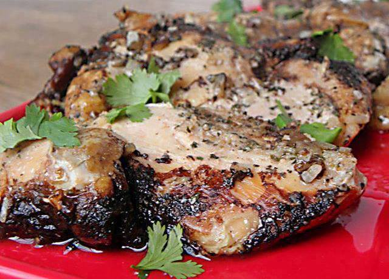

Crock Pot Balsamic Chicken

Very simple recipe that is great for leftovers and served with potatoes or rice.
Flavorful and delicious crock pot meal that pairs well with mashed potatoes and vegetables.
Ingredients
- 1 teaspoon garlic powder
- 1 teaspoon dried basil
- 1/2 teaspoon salt
- 1/2 teaspoon pepper
- 2 teaspoons dried minced onion
- 4 garlic cloves, minced
- 1 tablespoon extra virgin olive oil
- 1/2 cup balsamic vinegar
- 8 boneless, skinless chicken thighs (about 24 ounces) or breasts
- sprinkle of fresh chopped parsley
Steps
- Combine the first five dry spices in a small bowl and spread over chicken on both sides. Set aside.
- our olive oil and garlic on the bottom of the crock pot. Place chicken on top.
- Pour balsamic vinegar over the chicken.
- Cover and cook on high for 4 hours. Sprinkle with fresh parsley on top to serve.